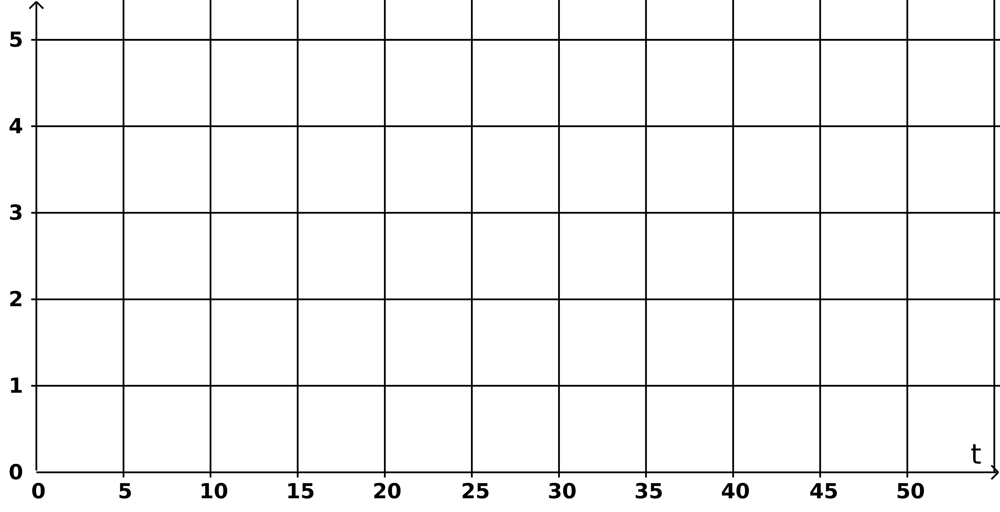
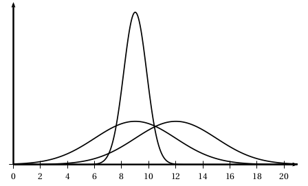

BTS - Probabilités et équations différentielles - TD - ET - Révisions
Étude d'un circuit de lissage \(RL\)
On étudie un montage constitué d'un assemblage en série d'une résistance \(R\) et d'une bobine \(L\) ; ce montage a pour but de lisser une tension.
On applique une tension d'entrée \(e(t)\) (en volts, fonction du temps \(t\), en secondes) à l'ensemble du montage.
On mesure la tension de sortie \(s(t)\) aux bornes de la résistance \(R\) (en volts).
L'équation différentielle \((E)\) vérifiée par \(s(t)\) et \(e(t)\) est :
\(\displaystyle(E)~:~~~\dfrac{L}{R}s'(t)+s(t)=e(t)\)
On prend \(R=20\,m\Omega\) et \(L=80\,\)mH ; ainsi :
\(\displaystyle(E)~:~~~4s'(t)+s(t)=e(t)\)
\(e(t)\) est ici une tension constante de 5 V, l'équation \((E)\) est donc :
\(\displaystyle(E_A)~:~~~4s'(t)+s(t) = 5 \)
- Déterminer une solution particulière de \((E_A)\) sous la forme \(s(t)=K\) où \(K\) est une constante réelle.
- En déduire toutes les solutions de \((E_A)\).
Rappel : Les solutions générales de l'équation homogène \(ay'(t)+by(t)=0\) (avec \(a,b\) contantes réelles) sont les fonctions \(c\textrm{e}^{\frac{-b}{a}t}\) où \(c\) est une constante réelle dépendant des conditions initiales.
- On suppose que \(s(0)=0\) ; démontrer que dans ce cas, la solution de \((E_A)\) est \(s(t)=5-5\textrm{e}^{\frac{-t}{4}}\).
- On admet que \(s(t)=5-5\textrm{e}^{\frac{-t}{4}}\) ; déterminer la limite de \(s\) lorsque \(t\) tend vers l'infini.
- En calculant \(s'(t)\), justifier que \(s\) est strictement croissante.
- Tracer \(s\) dans le repère suivant :

Probabilités
Les trois parties de cet exercice peuvent être traitées de façon indépendante.
Dans cet exercice, les résultats seront arrondis à \(10^{-3}\) près.
Partie A
La société Sun-NRJY fabrique des cellules photovoltaïques qu'elle
assemble ensuite pour former des panneaux qui seront installés sur le
toit de bâtiments pour produire de l'électricité.
Ces cellules, à base de silicium, sont très fines (environ 250µm) et très
fragiles. On estime que 1,5% des cellules fabriquées présenteront un
défaut (fissure, casse, ...) et seront donc inutilisables.
À la sortie de la production, on forme des lots de 75 cellules. La production étant très importante
on peut assimiler la constitution d'un lot de 75 cellules à 75 tirages indépendants avec remise.
On note \(X\) la variable aléatoire qui associe à chaque lot de 75 cellules le nombre de cellules
inutilisables qu'il contient.
- Justifier que \(X\) suit une loi binomiale dont on précisera les paramètres.
- Quelle est la probabilité qu'un lot ne contienne aucune cellule inutilisable ?
- Un panneau est constitué de 72 cellules. Quelle est la probabilité d'avoir suffisamment de cellules sans défaut dans un seul lot pour pouvoir fabriquer un panneau ?
Partie B
Les 72 cellules utilisées pour constituer un panneau sont ensuite raccordées entre elles
(soudures) puis placées sous une vitre de protection et insérées dans un cadre en aluminium. Les panneaux ainsi fabriqués sont alors expédiés chez un installateur.
À la réception des panneaux, l'installateur constate que certains panneaux présentent des défauts
qui peuvent être de deux types, des défauts électriques (cellules fissurées, soudures
défectueuses, ...), des défauts de structure (cadre abîmé, verre brisé, ...).
Une étude statistique a permis d'établir que 2% des 500 panneaux reçus par l'installateur avaient un défaut électrique, que 1% des panneaux avaient un défaut de structure et que parmi les panneaux présentant un défaut de structure, 40% avaient aussi un défaut électrique.
On choisit au hasard un panneau.
- On appelle \(E\) l'évènement : « le panneau présente un défaut électrique ».
- On appelle \(S\) l'évènement : « le panneau présente un défaut de structure ».
- Faire un tableau à double entrée (ligne : E, son complémentaire, total ; même chose pour S en colonne), ou un arbre au choix.
- Quelle est la probabilité qu'un panneau pris au hasard parmi ceux livrés à l'installateur ne présente aucun défaut ?
- Calculer \(P(E)\), \(P(S)\) et \(P(S\cap E)\).
- Les évènements \(E\) et \(S\) sont-ils indépendants ? Expliquer.
Partie C
Dix de ces panneaux sont installés sur le toit d'une maison située dans une région à
ensoleillement régulier et produisent de l'électricité.
On désigne par \(Y\) la variable aléatoire qui, à chaque journée, associe la production électrique fournie par ces 10 panneaux, exprimée en kWh.
La variable \(Y\) suit la loi normale de paramètres \(\mu = 9\) et \(\sigma = 3\).
- Quelle est la probabilité que la production journalière soit comprise entre 6 et 12 kWh ?
- Parmi les trois fonctions de densités de probabilité représentées ci-dessous, laquelle peut être celle de la loi de \(Y\) ? Justifier.

- Les occupants de la maison consomment en moyenne 10 kWh par jour (hors chauffage et eau chaude).
- Quelle est la probabilité que la production journalière des panneaux soit supérieure à la
consommation moyenne quotidienne ?
- Quelle devrait être la consommation moyenne quotidienne de cette famille, en kWh, pour
que cette probabilité soit environ de 90% ? On arrondira la réponse au dixième.